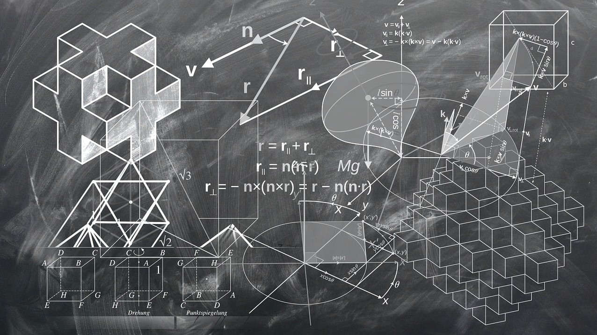

Térgeometriai alapok
Ismerkedjen meg a térgeometriával és annak egyenleteivel, amelyeket a számítógép képernyőjére való rajzoláshoz használnak.

A 3D grafika a digitális művészet és a technológia egyik legdinamikusabban fejlődő területe, amely számos iparágban játszik kulcsszerepet.
A számítógéppel támogatott tervezés (CAD) eszközeivel mérnökök és tervezők pontos és részletes 3D modelleket készíthetnek, amelyeket építészeti tervekben, ipari formatervezésben és még sok más területen alkalmaznak. Ezek a modellek gyakran szolgálnak alapul a 3D nyomtatáshoz, amely lehetővé teszi fizikai tárgyak létrehozását rétegről rétegre történő anyagfelvitellel, forradalmasítva ezzel a gyártási folyamatokat.
A videojáték-tervezésben a 3D grafika központi szerepet játszik, hiszen a valósághű és elbűvölő virtuális világok megteremtéséhez elengedhetetlen. Az animáció területén a 3D technológia lehetővé teszi élethű karakterek és környezetek megalkotását, amelyek a filmek, sorozatok és reklámok világában lenyűgöző vizuális élményt nyújtanak. Ezen területek összefonódása egyre szorosabb, ami új lehetőségeket és innovációkat eredményez a kreatív iparágakban.
Ismerkedjen meg a térgeometriával és annak egyenleteivel, amelyeket a számítógép képernyőjére való rajzoláshoz használnak.
Ismerje meg a 3D grafika alapjait, ahol térbeli objektumok és jelenetek létrehozásával új dimenziókat adhat kreativitásának. Oldalunkon részletes útmutatókat és gyakorlati példákat talál, amelyek segítenek elsajátítani a 3D modellezés, textúrázás és renderelés technikáit.
Fedezze fel a CAD (számítógéppel támogatott tervezés) szoftverek világát, amelyekkel pontos és professzionális műszaki rajzokat, modelleket készíthet. Bemutatjuk a legnépszerűbb programokat, azok funkcióit és használatát, hogy Ön is kihasználhassa a CAD nyújtotta tervezési lehetőségeket.
Sajátítsa el a 3D tervezés és nyomtatás művészetét! Nálunk megtanulhatja a digitális modellezés, a precíziós tervezés és a gyártási folyamatok alapjait, miközben egy támogató és innovatív közösség részévé válhat.
A poligoniális modellezés a 3D grafika alapvető technikája, amely háromszögek és négyszögek felhasználásával hoz létre objektumokat. Ezzel a módszerrel részletes és pontos geometriai formák modellezhetők. Gyakran alkalmazzák videojátékokban, animációkban és vizuális effektekben.
Ismerje meg a két legnépszerűbb szoftver, a Blender és az Unreal használatát, amelyekkel elképesztően részletes karaktereket és helyszíneket hozhat létre. Ismerje meg a karaktermodellezés, textúrázás és világítás fortélyait, és lépjen be a virtuális valóság tervezésének izgalmas világába!
Alkossa meg kedvenc karaktereit és gyerekkori rajzait 3D karakterek formájában, vagy csatlakozzon az animációs filmet előkészítő karaktermodellezés folyamatához!